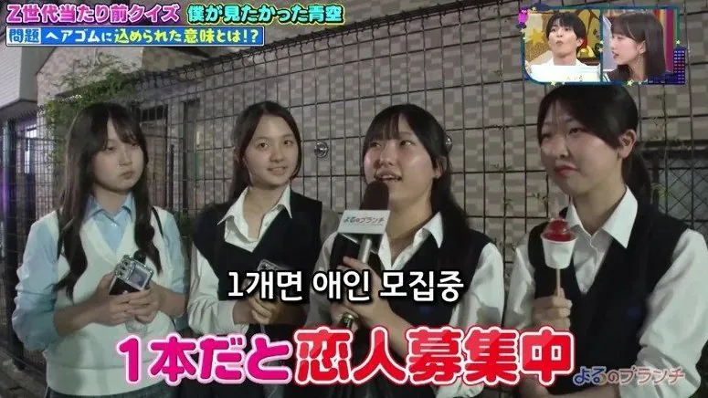
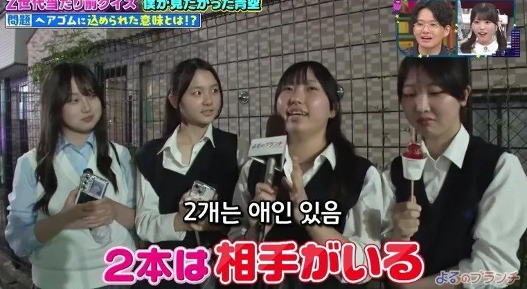
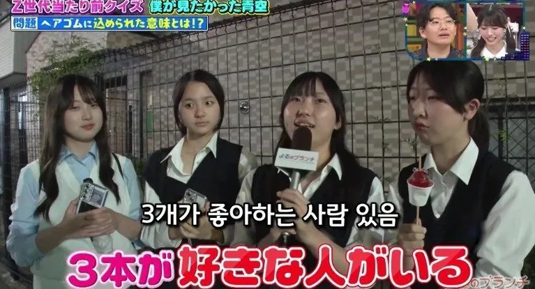
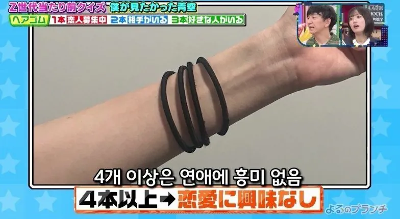
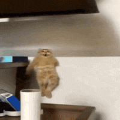

하나 둘 셋 넷 다 여 6학년이냐?




하나 둘 셋 넷 다 여 6학년이냐?
텐링즈 얼탱

맨 왼쪽 오해원 닮았다
맨 오른쪽은 주현영 닮음
당신의 시선은 좀 남다르네요
그런가 안닮았나보네 미안
있긴 있어
근데 좀 옅어
5개 = 특수부대 훈련 이수 완
샹치
맨 왼쪽 애가 인기 제일 많을듯
차빼 이XX야 밥퍼
락팬들이 손목에 저런거 주렁주렁달던데 그건 뭔가요
제주도 대문 같은건가
오른쪽 끝 친구 놀랍게도 마이크가 아니라 탕후루임 ㅋㅋ
침투력 ㅋㅋ
10개 쿵푸허슬 세탁소 아저씨 딸
북한군 한 명을 능히 상대할 수 있음
북한군 두 명을 능히 상대할 수 있음
북한군 세 명을 능히 상대할 수 있음
북한군 네 명을 능히 상대할 수 있음
"숫자란 의미가 없음"
팔토시 : 전차 제압 가능
차 빼 이 걔쒜이야, 바뻐
양손에 10개면 홍가권 수련중이란뜻이니 깝치면안됨
개방이냐
킬마크 아니었어?
그래서였나 난 1개인데도 다들 외면하더라
뭔시발 개방파 매듭갯수도 아니고 ㅋㅋ
5개면 남미새 ㅅㅅㅅㅅㅅㅅㅅㅅㅅㅅㅅㅅㅅㅅㅅㅅㅅㅅㅅ
5개면 전차급 전투력 보유
파괴한 전차의 수 기록하는거 아니었음?
4결제자 정도면 연애생각 안 날 경지긴하지 ㅋㅋㅋㅋ
우리나라도 예전에 건강팔찌유행할때 건강팔찌 색깔로 그런거 구분하던때 있지않았나 ㅋㅋ
어릴땐 저런거 하나씩 있었지 뭐 ㅋㅋㅋㅋ
쿵푸허슬의 게이아저씨는 뭐임
'여자한테 관심 없음'
이병 일병 상병 병장
10개=만다린